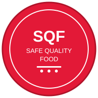

EN
EN
 FR
FR
 AR
AR
 HY
HY

Խիստ սննդի անվտանգության և որակի երաշխավորում
Անվտանգ Որակյալ Սննդի (SQF) ծրագիրը խիստ և վստահելի սննդի անվտանգության և որակի կառավարման համակարգ է, որը ճանաչված է մանրածախ վաճառողների, բրենդի սեփականատերերի և սննդի սպասարկման մատուցողների կողմից ամբողջ աշխարհում։ Կառավարվում է Անվտանգ Որակյալ Սննդի Ինստիտուտի (SQFI) կողմից, որը Սննդի Մարքեթինգի Ինստիտուտի (FMI) բաժանմունք է, SQF-ը նախագծված է համաշխարհային ծառայելու գնորդների և մատակարարների կարիքները։
SQF սերտիֆիկացումը ճանաչված է Համաշխարհային Սննդի Անվտանգության Նախաձեռնության (GFSI) կողմից և ապահովում է համապարփակ շրջանակ սննդի անվտանգության և որակի միաժամանակ կառավարման համար։ Այն անցնում է հիմնական սննդի անվտանգությունից՝ ներառելով որակի կառավարումը, դարձնելով այն արդյունաբերության ամենահամապարփակ ստանդարտներից մեկը։
Մեր SQF սերտիֆիկացումը ներկայացնում է Շահիրյանի նվիրվածությունը արտադրելու ձավարի ցորեն, որը ոչ միայն բավարարում, այլև գերազանցում է սննդի անվտանգության և որակի միջազգային ստանդարտները։ Այս սերտիֆիկացումը հաստատում է՝
Այն, ինչը տարբերում է SQF-ը, նրա կրկնակի կենտրոնացումն է և՛ անվտանգության, և՛ որակի վրա։ Մինչդեռ շատ ստանդարտներ կենտրոնանում են միայն սննդի անվտանգության վրա, SQF-ը ապահովում է, որ արտադրանքները ոչ միայն անվտանգ են, այլև համապատասխանում են խիստ որակի բնութագրերին։ Շահիրյանի համար սա նշանակում է՝
SQF սերտիֆիկացումը պահպանելը պահանջում է անսասան ուշադրություն մանրամասներին և գործառնական գերազանցություն՝
1958 թվականից Շահիրյան ընտանիքը պարտավորվել է արտադրել լավագույն ձավարի ցորենը։ Մեր SQF սերտիֆիկացումը ապահովում է, որ այս պարտավորվածությունը աջակցվում է աշխարհակարգի սննդի անվտանգության և որակի կառավարման համակարգերով։ Երբ դուք ընտրում եք Շահիրյանը, դուք ընտրում եք արտադրանք, որը պատվում է մեր հայկական ժառանգությունը՝ միաժամանակ բավարարելով ամենաբարձր ժամանակակից ստանդարտները։